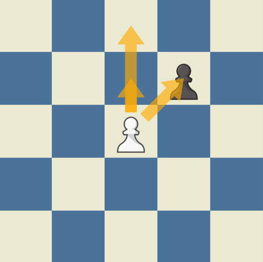
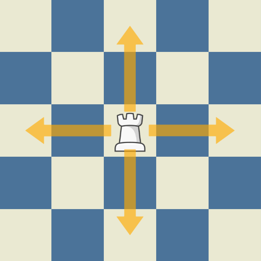

The pawn's movement can be a little confusing to those who have not played chess before. It is often the first piece moved by both sides and its first move is very important. This is because a pawn can be moved 1 or 2 squares forward when it's first moved but only by 1 square forward after its first move. It is important to note that the pawn can only move 2 squares forward the first time you move that particular pawn, afterwards it can only be moved by 1 square forward. A pawn can only capture an opposing piece by moving 1 square diagonally forward (see image on left).

The bishop's movement is much simpler than the pawn's. It can only move diagonally (forward or backwards) but has no limit in terms of distance travelled with the possibility for the bishop to travel across the entire board in one move, however it can't travel through other pieces regardless of who owns them. To capture an opposing piece the bishop simply moves to the square that that piece is on whilst still abiding by its movement rules.

The knight's movement is the most unique of all the chess pieces. Instead of moving diagonally or orthogonally the knight makes moves in an L-shape. To capture an opposing piece the knight has too move to the square that that pice occupies whilst still abiding by its movement rules.
An additional factor that makes the knight so unique is that it is the only piece that can jump over other pieces on the board.

'ello
'ello
'ello